Que voulez-vous faire ?
Cliquez sur une action — chaque fiche vous guide pas à pas.
🔐 Se connecter au portail
- Ouvrez l'e-mail d'invitation reçu de la part de Pulse / ASMT65, ou rendez-vous sur la page de connexion du portail.
- Dans l'encart Nouvelle adhésion ?, cliquez sur C'est parti !
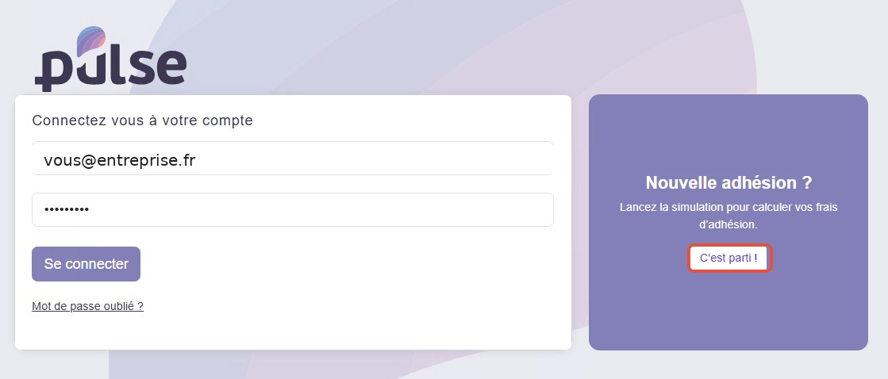
- L'écran Bienvenue ! s'affiche : toute demande commence par une simulation du montant de la cotisation. Cliquez sur Continuer.
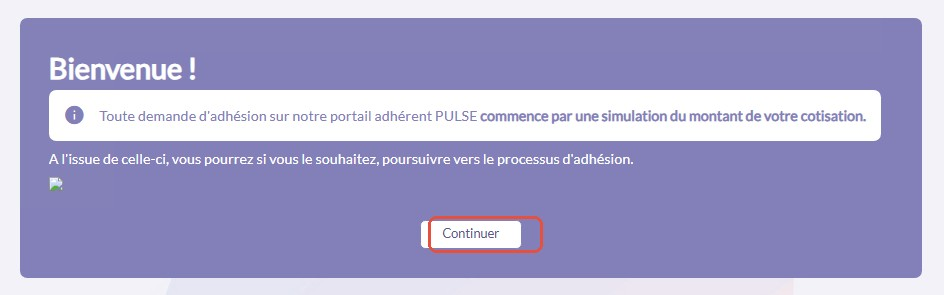
- Renseignez votre code postal et sélectionnez votre commune dans la liste proposée.
- L'écran Quel est votre profil ? s'affiche.
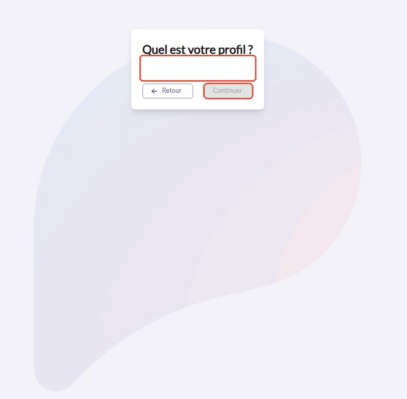
- Saisissez votre adresse e-mail et votre mot de passe, puis cliquez sur Se connecter.
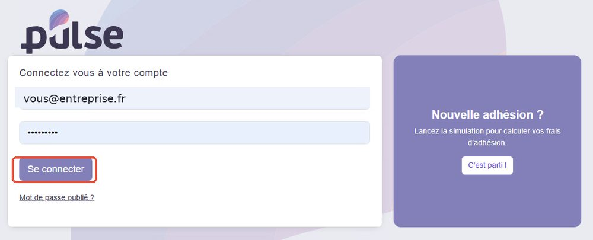
- Un écran de double authentification s'affiche. Si l'application d'authentification n'est pas configurée, cliquez sur Utiliser le code par email.
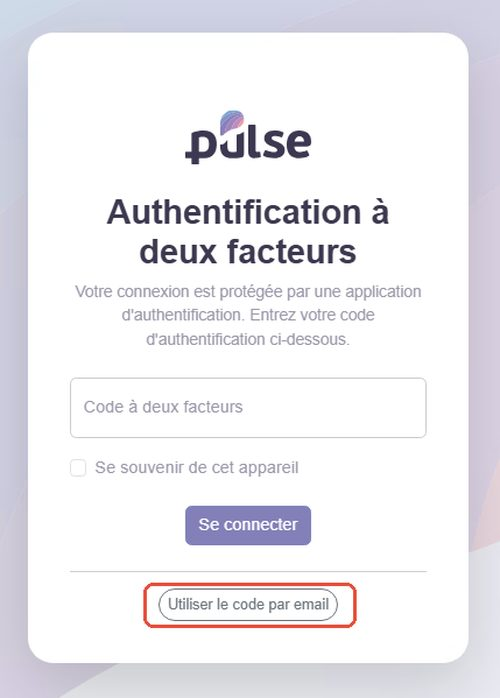
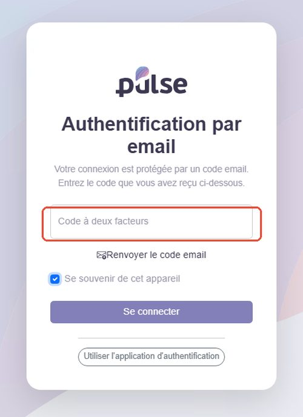
- Saisissez le code reçu par e-mail dans le champ prévu, puis cliquez sur Se connecter.
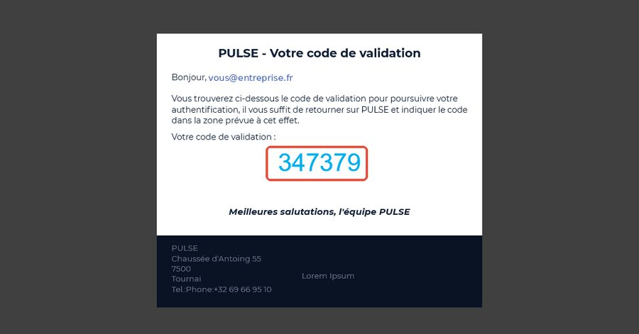
- Sur la page de connexion, cliquez sur Mot de passe oublié ?
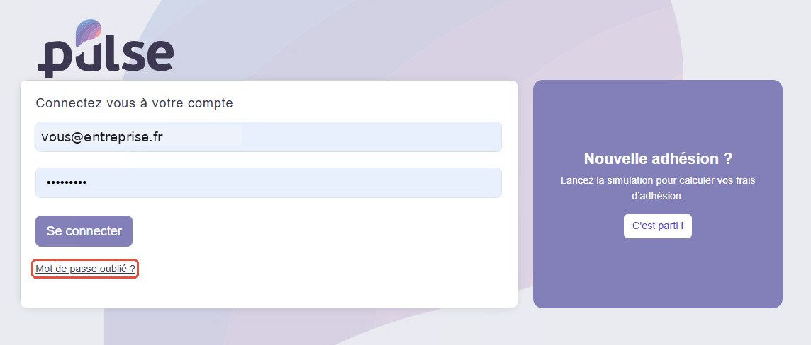
- Saisissez votre e-mail, puis cliquez sur Réinitialiser le mot de passe.
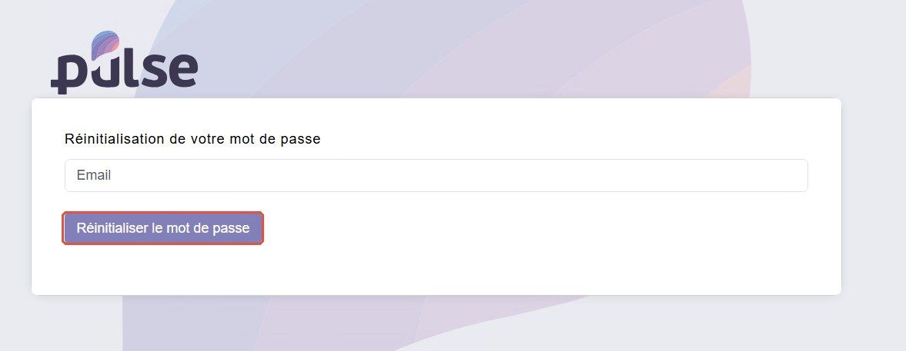
- Consultez votre boîte mail et cliquez sur Ouvrir l'application dans l'e-mail reçu.
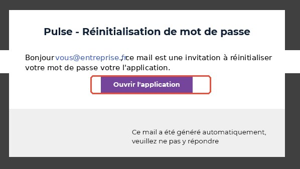
- Saisissez votre nouveau mot de passe deux fois, puis cliquez sur Réinitialiser.
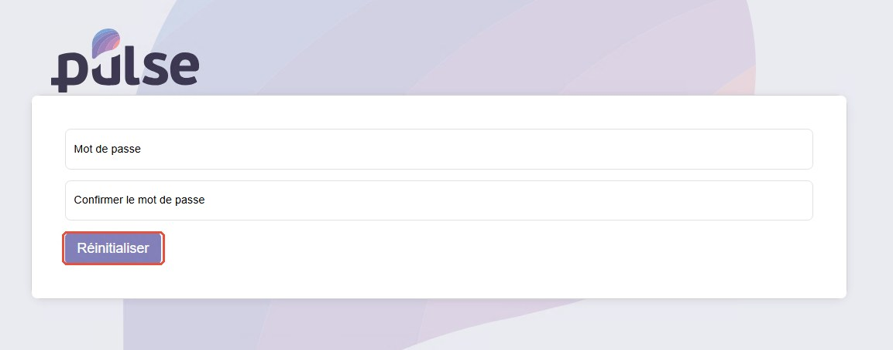
- Un message confirme la réinitialisation. Cliquez sur le lien pour vous reconnecter.
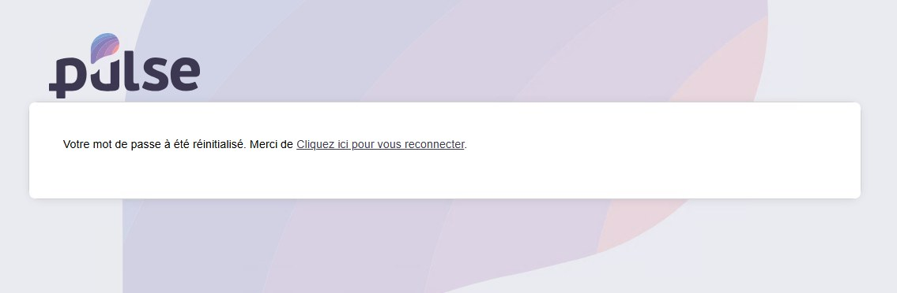
📊 Le tableau de bord
C'est la première page affichée après connexion. Elle résume la situation de votre entreprise en un coup d'œil : répartition des salariés (âge, genre, catégorie), résumé actifs/inactifs, aperçu de l'entreprise et suivi des examens réalisés.
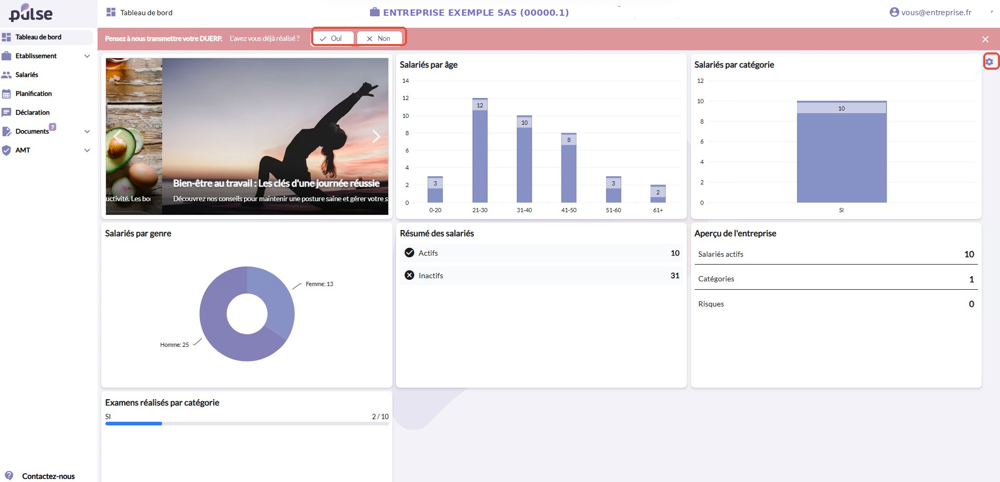
👥 Gérer les salariés
- Dans le menu Salariés, cliquez sur Ajouter un salarié.
- Renseignez son numéro de sécurité sociale — l'écran se complète en 2 parties : la partie administrative (état civil) et la fiche de poste.
- Complétez le poste, la date d'embauche et les risques liés à son activité.
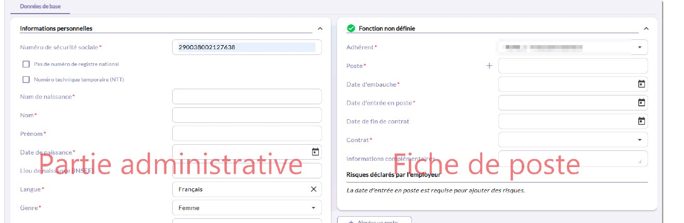
- Cliquez sur Enregistrer pour créer le salarié.
- Dans la liste des salariés, cliquez sur Afficher les filtres si besoin de retrouver rapidement une personne.
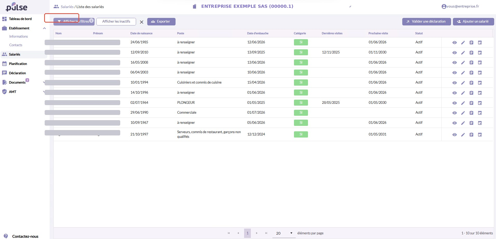
- Affinez par adhérent, nom, genre, tranche d'âge, date d'embauche, catégorie ou risques, puis cliquez sur Valider.
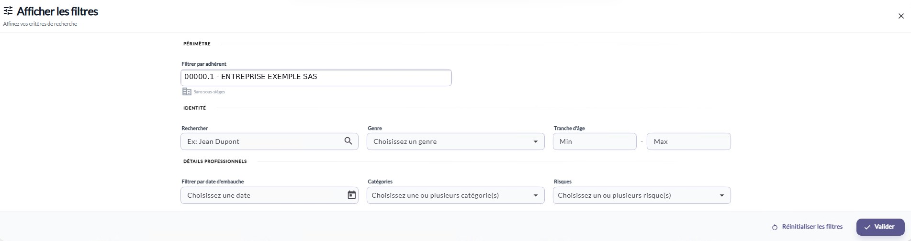
- Cliquez sur la fiche du salarié retrouvé, puis sur Modifier.
- Mettez à jour les informations, puis cliquez sur Enregistrer.
- Ouvrez la fiche du salarié concerné, puis cliquez sur Modifier le poste.
- Une fenêtre propose 2 options.
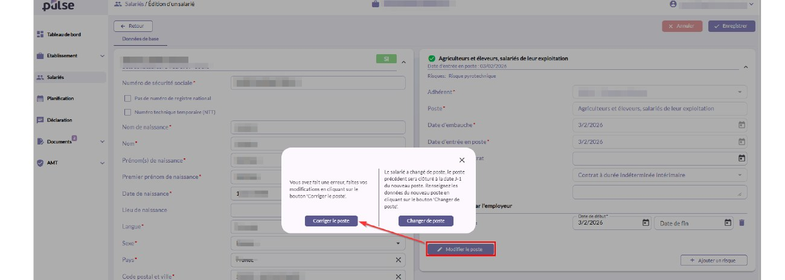
- Ouvrez la fiche du salarié qui quitte l'entreprise, dans les données du poste.
- Renseignez une date passée dans le champ Date de fin de contrat.
- Enregistrez — le poste devient inactif à cette date.
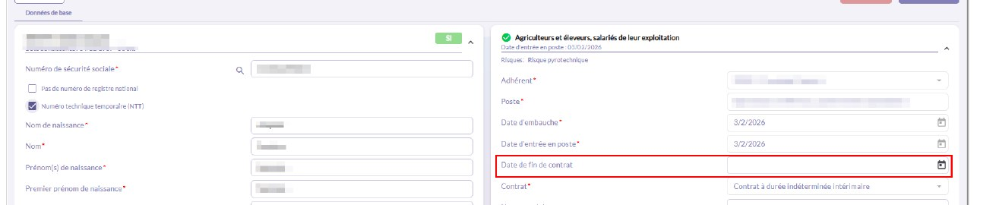
Un salarié qui revient dans l'entreprise (réembauche, retour…) peut être réactivé — inutile de le recréer.
- Dans la liste des salariés, cliquez sur Afficher les inactifs.
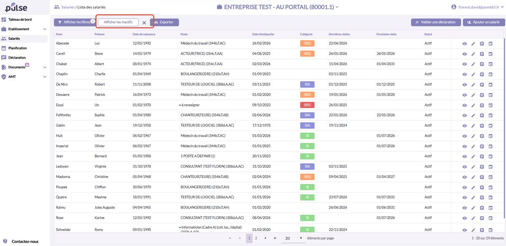
- Les salariés inactifs apparaissent grisés en italique. Retrouvez la personne concernée et cliquez sur le crayon ✏️ de sa ligne.
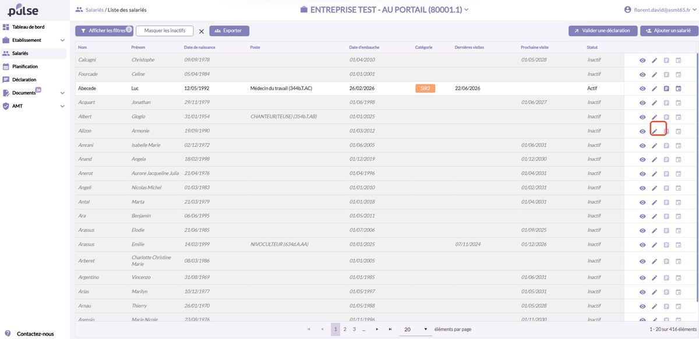
- Dans sa fiche, cliquez sur + Ajouter un poste.
- Renseignez le nouveau poste et sa date d'entrée, puis cliquez sur Enregistrer.
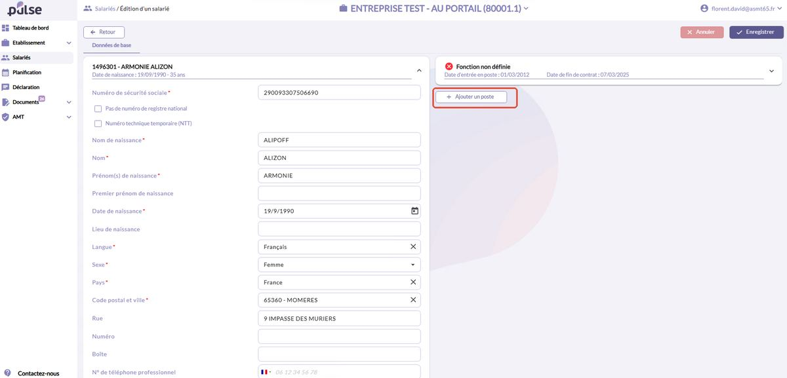
🩺 Demander une visite médicale
Depuis la liste des salariés, vous pouvez initier une demande de visite médicale de deux façons grâce aux icônes situées à droite de chaque ligne salarié.
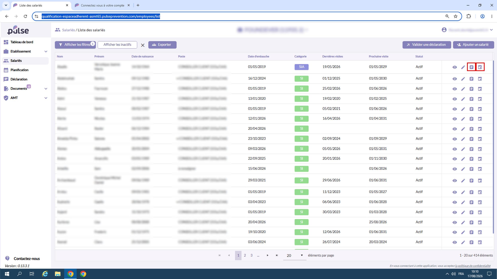
- L'icône presse-papiers (gauche, encadrée en rouge) envoie une demande de visite à l'assistante médicale.
Formulaire de demande
En cliquant sur l'icône presse-papiers, une fenêtre s'ouvre :
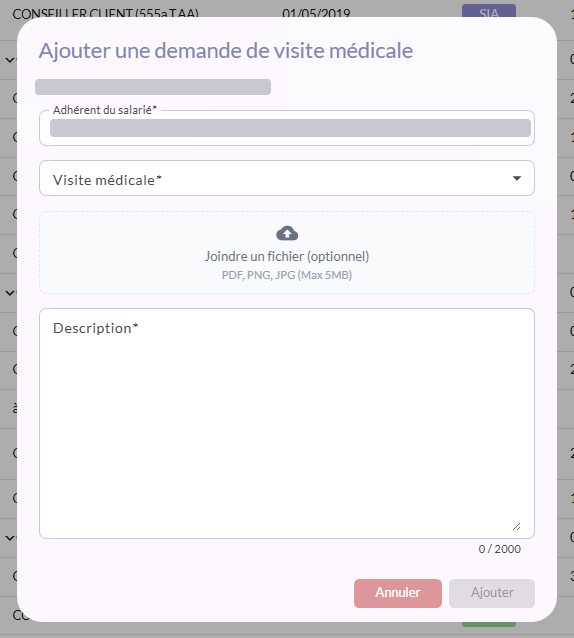
- Vérifiez le champ Adhérent du salarié — il est pré-rempli avec votre établissement.
- Sélectionnez le type de visite dans la liste déroulante.
- Joignez un fichier si nécessaire (optionnel) — formats acceptés : PDF, PNG, JPG (max 5 Mo).
- Saisissez une description pour préciser le motif ou tout élément utile à l'assistante (2 000 caractères max).
- Cliquez sur Ajouter pour envoyer la demande.
La section Planification / Convocations et visites vous permet de consulter l'ensemble des visites médicales planifiées pour vos salariés.
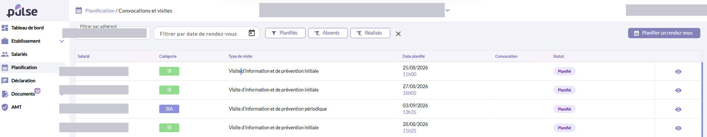
Le tableau affiche pour chaque salarié :
- Salarié — nom et prénom.
- Catégorie — SI (Suivi Individuel) ou SIA (Suivi Individuel Adapté).
- Type de visite — ex. Visite d'information et de prévention initiale, périodique…
- Date planifiée — date et heure du rendez-vous.
- Convocation — indique si la convocation a été envoyée.
- Statut — ex. Planifié, Réalisé, Absent.
Vous pouvez filtrer l'affichage par date de rendez-vous ou par statut (Planifiés, Absents, Réalisés).
📁 Documents & factures
- Ouvrez le menu Documents.
- Choisissez l'onglet : Documents adhérent, Documents salariés ou Factures.
- Utilisez les filtres pour retrouver rapidement ce que vous cherchez.
- Cliquez sur l'icône de téléchargement à droite de la ligne souhaitée.
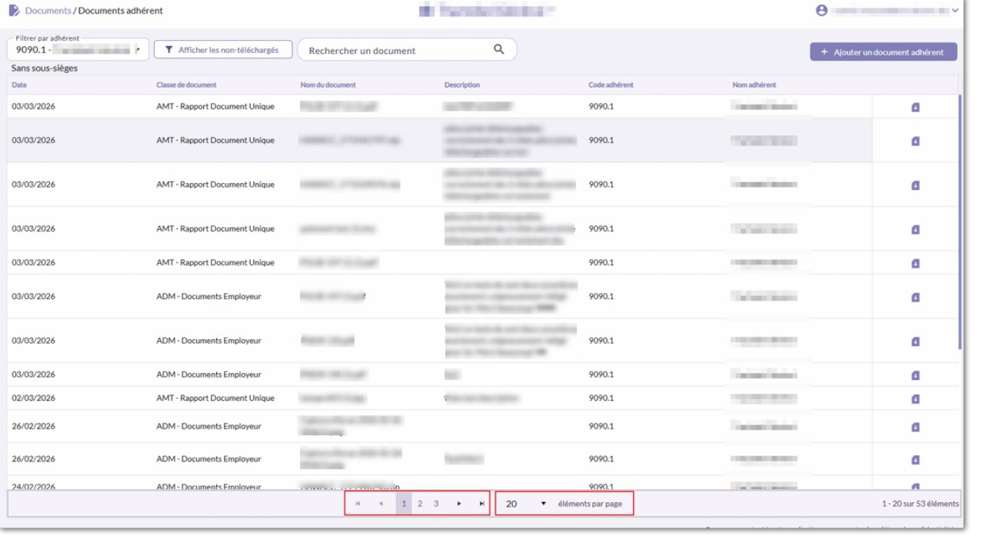
L'onglet Factures fonctionne sur le même principe, avec le détail des montants et du statut de paiement :
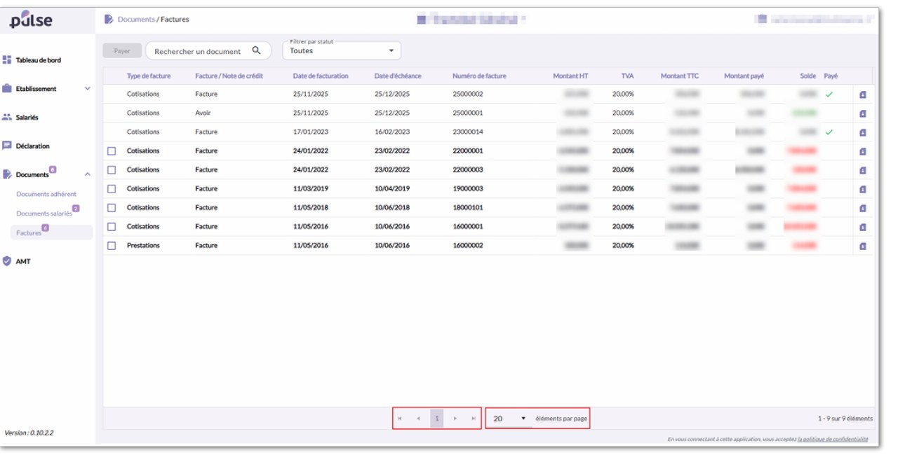
📋 Déclarer les effectifs
- Ouvrez le menu Déclaration.
- Si besoin, cliquez sur Mettre à jour la liste des salariés pour corriger les informations avant de déclarer.
- Vérifiez le récapitulatif par catégorie, puis cliquez sur Confirmer la déclaration.
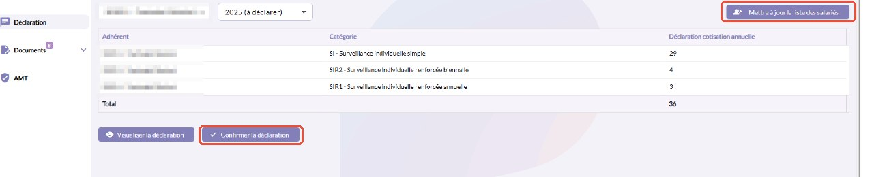
🤝 Donner accès à un tiers
Vous pouvez donner accès au portail à un expert-comptable, un cabinet RH ou un gestionnaire de paie — sans jamais partager vos propres identifiants.
- Cliquez sur votre nom en haut à droite, puis sur Gestion des utilisateurs.
- Cliquez sur Créer un compte utilisateur.
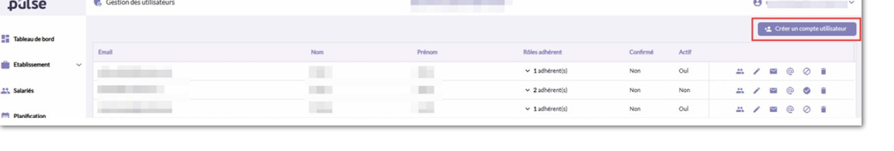
- Renseignez le nom, prénom et e-mail du tiers.
- Le champ adhérent est déjà renseigné si vous n'avez qu'un seul établissement. Si vous en avez plusieurs, sélectionnez celui concerné.
- Cochez les rôles auxquels il aura accès (Administrateur, AMT, Entreprise, Déclaration, DUERP, Salariés, Facturation…).
- Cliquez sur Ajouter.
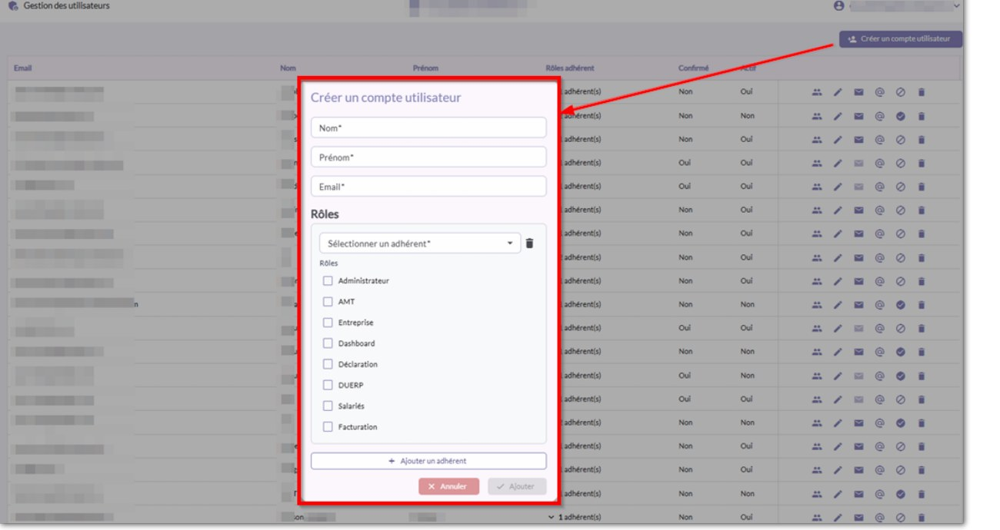
- Pour donner à cette même personne un accès à un autre établissement (avec ses propres rôles), retrouvez-la dans la liste des utilisateurs et cliquez sur son nom pour ouvrir Gestion des droits.
- Cliquez sur + Ajouter un adhérent, sélectionnez l'établissement concerné et cochez les rôles à lui attribuer.
- Cliquez sur Valider.
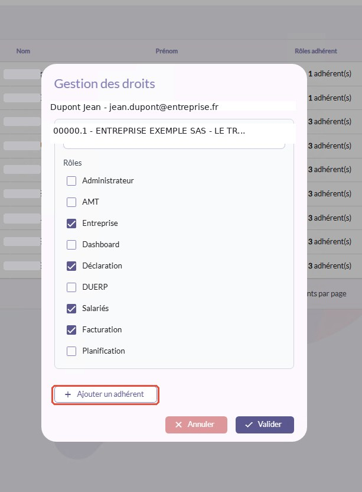
🛡️ Prévention des risques
Le portail MAP (Mon Approche Prévention) est votre espace personnalisé de prévention des risques professionnels, distinct du Portail Adhérent.
- Ouvrez le menu AMT → Général.
- La section Mon Approche Prévention s'affiche.
- Cliquez sur Accéder à mon portail MAP.
- Votre portail MAP personnalisé s'ouvre dans un nouvel onglet.
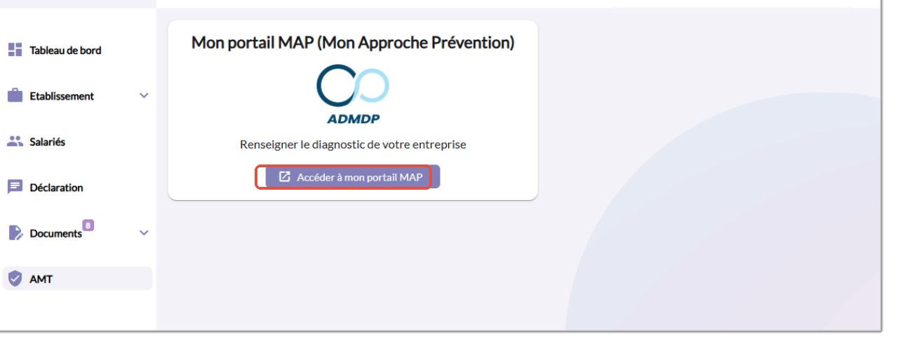
Le DUERP (Document Unique d'Évaluation des Risques Professionnels) est une obligation légale. Vous pouvez le transmettre et le consulter directement depuis le portail.
- Ouvrez le menu AMT → DUERP.
- Cliquez sur Transmettre mon DUERP.
- Cochez Ajouter un fichier DUERP et téléchargez votre document.
- Renseignez la date de dernière mise à jour et cochez si un plan d'actions de prévention est défini.
- Cliquez sur Ajouter.
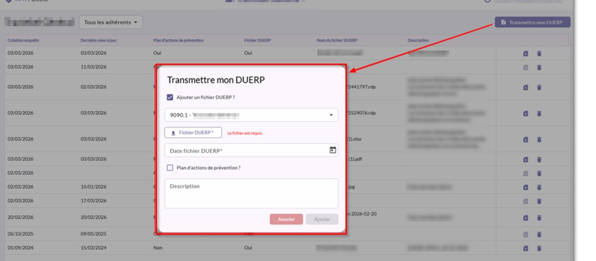
🏢 Mon établissement
Ce menu permet de visualiser et, si nécessaire, de modifier les informations administratives de votre établissement.
- Ouvrez le menu Établissement → Informations.
- Si votre entreprise a plusieurs sièges, sélectionnez celui à consulter dans la liste en haut.
- Cliquez sur Modifier les informations de l'établissement pour éditer les champs modifiables.
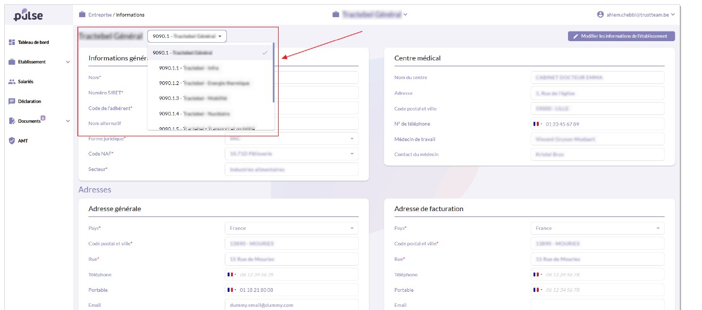
Cette section permet de gérer les contacts associés à votre établissement : les visualiser, en ajouter, les modifier ou les supprimer.
- Ouvrez le menu Établissement → Contacts.
- Choisissez l'onglet Établissement ou ASMT65 (les contacts ASMT65 sont en lecture seule).
- Cliquez sur Ajouter un contact de l'établissement, ou sur les icônes ✏️ / 🗑️ d'une ligne pour modifier ou supprimer un contact existant.
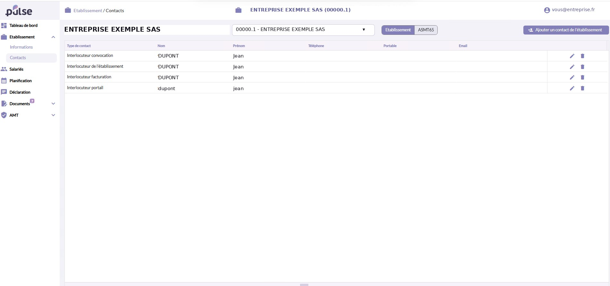